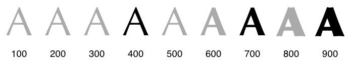

The use of unicode range subsets, and separate files for each stylistic variant of the font allows us to define a composite font family that is both faster and more efficient to download - the visitor will only download the variants and subsets it needs, and they are not forced to download subsets that they may never see or use on the page.
That said, there is one small gotcha with unicode-range: not all browser
support it, yet. Some browsers
simply ignore the unicode-range hint and will download all variants, while
others may not process the @font-face declaration at all. To address this, we need to fallback to “manual subsetting” for older browsers.
Because old browsers are not smart enough to select just the necessary subsets and cannot construct a composite font, we have to fallback to providing a single font resource that contains all necessary subsets, and hide the rest from the browser. For example, if the page is only using Latin characters, then we can strip other glyphs and serve that particular subset as a standalone resource.
- How do we determine which subsets are needed?
- If unicode-range subsetting is supported by the browser, then it will automatically select the right subset. The page just needs to provide the subset files and specify appropriate unicode-ranges in the @font-face rules.
- If unicode-range is not supported then the page needs to hide all unnecessary subsets - i.e. the developer must specify required subsets.
- How do we generate font subsets?
- Use the open-source pyftsubset tool to subset and optimize your fonts.
- Some font services allow manual subsetting via custom query parameters, which you can use to manually specify the required subset for your page - consult the documentation of your font provider.
Font selection and synthesis
Each font family is composed of multiple stylistic variants (regular, bold, italic) and multiple weights for each style, each of which, in turn, may contain very different glyph shapes - e.g. different spacing, sizing, or a different shape altogether.

For example, the above diagram illustrates a font family that offers three
different bold weights: 400 (regular), 700 (bold), and 900 (extra bold). All
other in-between variants (indicated in gray) are automatically mapped to the
closest variant by the browser.
When a weight is specified for which no face exists, a face with a nearby weight is used. In general, bold weights map to faces with heavier weights and light weights map to faces with lighter weights.
CSS3 font matching algorithm
Similar logic applies to italic variants. The font designer controls which
variants they will produce, and we control which variants we will use on the
page - since each variant is a separate download, it’s a good idea to keep the
number of variants small! For example, we can define two bold variants for our
Awesome Font family:
@font-face {
font-family: 'Awesome Font';
font-style: normal;
font-weight: 400;
src: local('Awesome Font'),
url('/fonts/awesome-l.woff2') format('woff2'),
url('/fonts/awesome-l.woff') format('woff'),
url('/fonts/awesome-l.ttf') format('ttf'),
url('/fonts/awesome-l.eot') format('eot');
unicode-range: U+000-5FF; /* Latin glyphs */
}
@font-face {
font-family: 'Awesome Font';
font-style: normal;
font-weight: 700;
src: local('Awesome Font'),
url('/fonts/awesome-l-700.woff2') format('woff2'),
url('/fonts/awesome-l-700.woff') format('woff'),
url('/fonts/awesome-l-700.ttf') format('ttf'),
url('/fonts/awesome-l-700.eot') format('eot');
unicode-range: U+000-5FF; /* Latin glyphs */
}
The above example declares the Awesome Font family that is composed of two resources that cover the same set of Latin glyphs (U+000-5FF) but offer two different “weights”: normal (400), and bold (700). However, what happens if one of our CSS rules specifies a different font weight, or sets the font-style
property to italic?
- If an exact font match is not available the browser will substitute the closest match.
- If no stylistic match is found (e.g. we did not declare any italic variants in example above), then the browser will synthesize its own font variant.

Authors should also be aware that synthesized approaches may not be suitable for scripts like Cyrillic, where italic forms are very different in shape. It is always better to use an actual italic font rather than rely on a synthetic version.
CSS3 font-style
The example above illustrates the difference between the actual vs. synthesized font results for Open-Sans - all synthesized variants are generated from a single 400-weight font. As you can tell, there is a noticeable difference in the results. The details of how to generate the bold and oblique variants are not specified. Hence, the results will vary from browser to browser, and will also be highly dependent on the font.